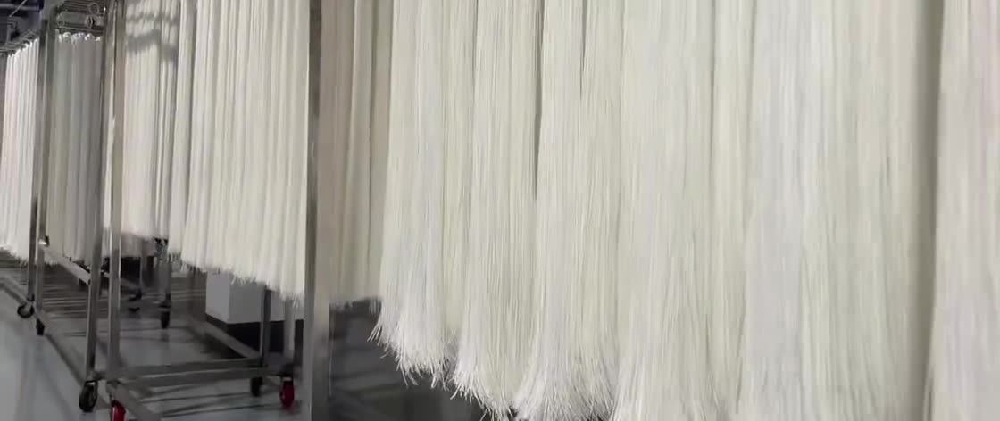

Aplicaciones
Seis campos. Con productos reales y resultados reales.
Cada campo explica el reto del agua, lo que debe hacer la membrana, qué comprobar antes del diseño y qué productos de HUAXIN aplican. Ninguna membrana sirve para cualquier química del agua: tómelo como punto de partida para hablar con nuestros ingenieros.
Vertido cero de líquidos
Las aguas residuales industriales destinadas a vertido cero tienen alta salinidad y dureza, tienden a ensuciar y requieren limpiezas agresivas frecuentes. Las membranas que pierden rechazo o se ensucian rápido trasladan más carga a evaporadores y cristalizadores.
El papel de la membrana
La RO concentra la corriente antes del tratamiento térmico. Aquí los elementos se eligen por resistencia al ensuciamiento, a la limpieza y a la oxidación, no solo por el rechazo del primer día.
Consideraciones de diseño
- Los SDT, la dureza y el sulfato de la alimentación determinan el riesgo de incrustación
- Frecuencia y química de limpieza (pH 1–13 a corto plazo en la RO de HUAXIN)
- Pretratamiento y SDI ≤ 5 en el elemento
Operación a largo plazo: vertido cero industrial Prueba de campo comparativa: ZLD de lixiviados de vertedero
Antiincrustante

Elemento de RO antiincrustante
RO resistente al ensuciamiento para agua salobre con alto potencial de ensuciamiento por debajo de 5.000 ppm, probada en campo durante 693 días en reutilización de agua de mina.
Agua de mar

Elemento de RO para desalinización de agua de mar
RO de alto rechazo y alto flujo para agua de alimentación por encima de 10.000 ppm. No se usa postratamiento oxidativo para elevar el rendimiento inicial.
También relevante: HX-BM
Agua potable de alta calidad
El agua municipal superficial y de pozo puede contener dureza, color, olor y microcontaminantes, mientras que la desmineralización total elimina los minerales que dan buen sabor al agua.
El papel de la membrana
La nanofiltración ablanda y elimina materia orgánica y microcontaminantes conservando parte de los minerales beneficiosos; la UF previa elimina partículas y microorganismos.
Consideraciones de diseño
- Dureza objetivo y retención de minerales
- Requisitos locales de certificación para agua potable (no indicados en el manual; consulte a HUAXIN)
- UF u otro pretratamiento antes de la NF
Prueba de campo comparativa: agua subterránea costera de Oriente Medio Prueba de campo comparativa: agua subterránea de Oriente Medio
Agua potable

Elemento de NF para agua potable de alta calidad
Nanofiltración de alto flujo para la purificación profunda de agua municipal superficial o de pozo, conservando minerales beneficiosos para el sabor.
Ultrafiltración en columna
Módulo de ultrafiltración (UF) en columna
Columnas de UF de fibra hueca de PVDF con poros inferiores a 30 nm, para purificación de agua y tratamiento de aguas residuales.
También relevante: HX-XLP
Reutilización de aguas residuales municipales
El agua municipal regenerada varía en calidad y lleva materia orgánica y carga biológica que ensucian las membranas posteriores.
El papel de la membrana
El MBR sustituye la clarificación por separación con membranas; la UF y la RO antiincrustante afinan el efluente para su reutilización.
Consideraciones de diseño
- Carga biológica y dimensionamiento del MBR (150–400 m³/d por módulo HUAXIN)
- Potencial de ensuciamiento en la etapa de RO
- Consumo energético y flujo objetivo
Biorreactor de membrana

Módulo de biorreactor de membrana (MBR)
Módulos con bastidor de acero inoxidable y más de 100 mm entre láminas de membrana, para tratamiento biológico municipal e industrial.
Ultrafiltración en columna
Módulo de ultrafiltración (UF) en columna
Columnas de UF de fibra hueca de PVDF con poros inferiores a 30 nm, para purificación de agua y tratamiento de aguas residuales.
También relevante: HX-BWFR
Desalinización de agua de mar
El agua de mar tiene alta salinidad y alto potencial de bioensuciamiento; el rechazo de boro y la estabilidad a largo plazo importan tanto como las cifras iniciales.
El papel de la membrana
Los elementos de RO para agua de mar realizan la etapa de desalinización; los mismos elementos sirven donde se extraen subproductos de alto valor del concentrado.
Consideraciones de diseño
- Salinidad, temperatura y objetivos de boro de la alimentación
- Control del bioensuciamiento y pretratamiento
- Presión de operación de hasta 8,0 MPa para HX-SW
Operación a largo plazo: reutilización de agua de mina, RO fase II — ensuciamiento
Extracción de litio de salares
Las salmueras de salar varían mucho en composición; separar el litio del magnesio y otros iones es la dificultad central.
El papel de la membrana
La nanofiltración selectiva y la RO se adaptan a cada salmuera para concentrar el litio y reducir la dependencia de adsorbentes o agentes auxiliares.
Consideraciones de diseño
- Relación Mg/Li y composición de la salmuera
- Las membranas a medida se desarrollan para cada proyecto
- Pruebas piloto antes del diseño definitivo
Separación industrial de sales

Elemento de NF para separación industrial de sales
Nanofiltración de alta selectividad que retiene materia orgánica de más de 200 Da y sales divalentes, dejando pasar parte de las sales monovalentes.
Agua potable
Elemento de NF para agua potable de alta calidad
Nanofiltración de alto flujo para la purificación profunda de agua municipal superficial o de pozo, conservando minerales beneficiosos para el sabor.
Agua de alta pureza para la industria
La producción de semiconductores, médica y alimentaria necesita agua siempre pura con bajo coste energético.
El papel de la membrana
La RO de baja y extra baja presión ofrece alto rechazo de sales y alto flujo como núcleo de la purificación en varias etapas.
Consideraciones de diseño
- RO de segundo paso y etapas de pulido
- Alimentación por debajo de 1.000–2.000 ppm para XLP / LP
- Energía por m³ con el flujo de diseño
Presión extra baja

Elemento de RO de presión extra baja
Alto caudal de permeado a presión de operación ultrabaja, para agua de alimentación por debajo de 1.000 ppm.
Baja presión

Elemento de RO de baja presión
RO de ahorro energético y alto permeado para agua de alimentación por debajo de 2.000 ppm, tolerante a limpiezas ácidas y alcalinas repetidas.
También relevante: HX-BW
Hable con un ingeniero
Cuéntenos sobre su agua.
Envíe su análisis de agua de alimentación y sus objetivos. Los ingenieros de HUAXIN le recomendarán un elemento y una configuración.